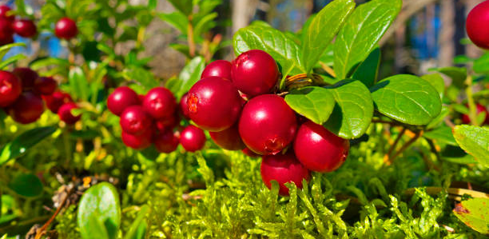

Organic Lingonberry Mouthwash
This fermented lingonberry mouthwash is a novel and organic innovation to aid oral home care. Using a patented method, the natural occurring sugar-content of the lingonberry juice has been reduced by fermentation to a safe level for oral use and does not contain additives. Due to its organic nature, it may also be swallowed. Fermented lingonberry mouthwash protects the oral mucosa from environmental and oxidative stress and is beneficial for oral health. It prevents inflammation of the gums and assists the healing of gum disease. It also reduces the symptoms caused by mouth dryness by increasing saliva secretion.
This product has been registered as a EUDAMED UDI/Medical Device and carries the UDI-ID/EUDAMED ID: 06429811111004.
Made in Finland by Berries United Ltd. Imported and distributed in the UK & ROI by Noooner LIMITED.
Health properties
Laboratory and clinical studies have shown a reduction in dental plaque and bleeding of the gums, and additionally antimicrobial, anti-inflammatory, anti-cancerous, and antioxidant properties. Caries-related Streptococcus mutans and candidosis-related Candida levels are reduced as well as periodontal disease-related pathogen levels. Levels of lactobacilli on the other hand are increased, which is thought to be a beneficial probiotic effect balancing the oral microbiota.
Nutritional value
The lingonberry has almost no calories. It is virtually fat-free and does not contain any saturated fat. Lingonberries also have vitamin E and are a source of dietary fibre. They contain many minerals (e.g. potassium, magnesium and manganese) and micronutrients (e.g. zinc and iron). Arctic lingonberries are rich in polyphenols, for example, lignans, resveratrol, quercetin and proanthocyanidins. It contains more lignans than any other berry species. It is also rich in organic acids, which play an important role as natural preservatives in berries and other foods. Lingonberries are known to have antioxidant, anti-inflammatory, antimicrobial and anti-cancerous properties and are considered beneficial to health.
Ingredients
- Water
- Nordic Lingonberry
- Yeast
- Alcohol volume < 0.5%
- Fermented
Directions for use
When to use
If gum inflammation or gum infection occurs, this mouthwash can be used 2 x a day (10 ml per use). Shake bottle before use, swirl mouthwash around the mouth for up to 30 seconds and spit out. For general use to aid oral home care, it can be used 1 x a day (10 ml per use). Do not brush teeth for 30 mins after using mouthwash.
How to measure
The cap of the bottle contains up to 5 ml of liquid. Alternatively, you can use a separate measuring cup.
How to store product
The fermented lingonberry mouthwash can be stored at room temperature or in the fridge. Do not freeze.
Use by
The expiry date of each bottle is 12 months from the time of bottling. Once the bottle has been opened, we advise the mouthwash to be used within two weeks. Standard bottle contains 120 ml.
Taste
The initial taste of the fermented lingonberry mouthwash is very similar to cranberry juice, followed by a sweet after taste. Due to its organic properties, it contains a little sediment.
Product offerings
Branded product
Berries United Fermented Lingonberry mouthwash. A retail-ready product. (120 ml)
White-labelled product
Manufacturing and packaging by the producer accompanied with retailer’s own branding. For example, Biomed Fermented Lingonberry mouthwash used for the Finnish market.
Bulk product
Manufactured by the producer and delivered to the customer for packaging and branding.
Licensed production
The manufacturer (patent holding entity) provides manufacturing instructions and legal rights to produce and sell the product in defined market areas.